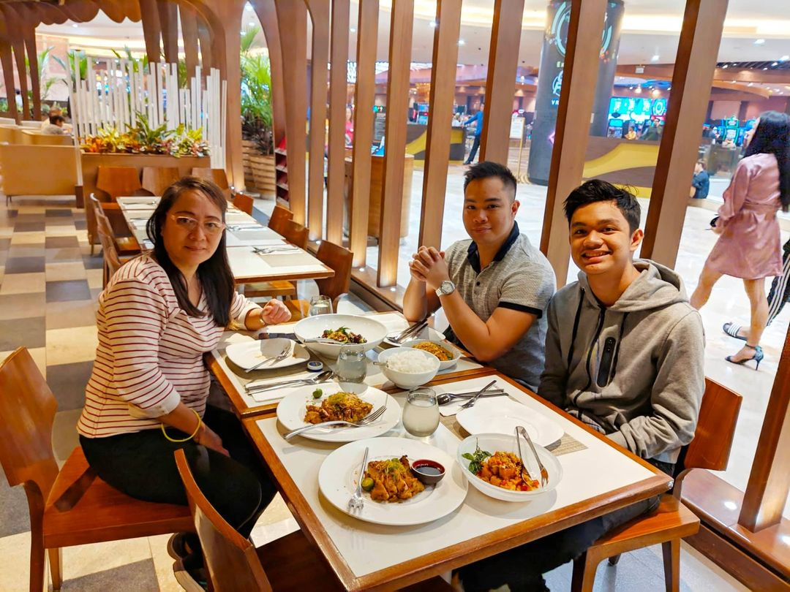
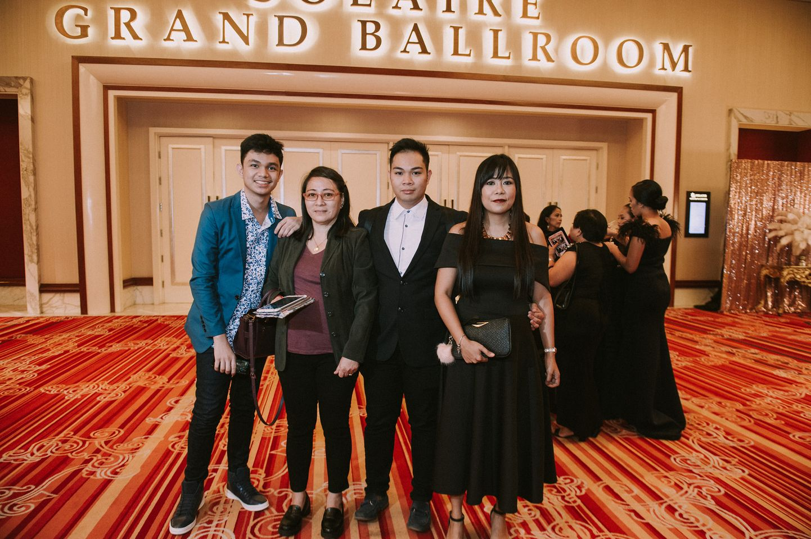
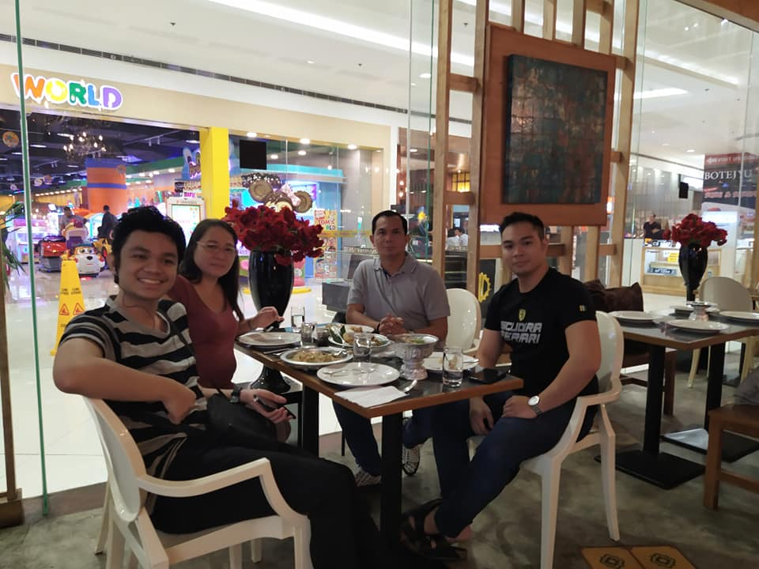
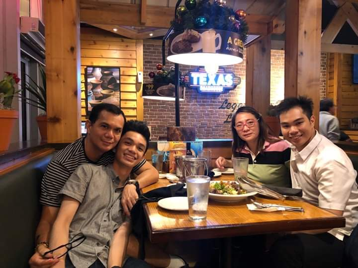
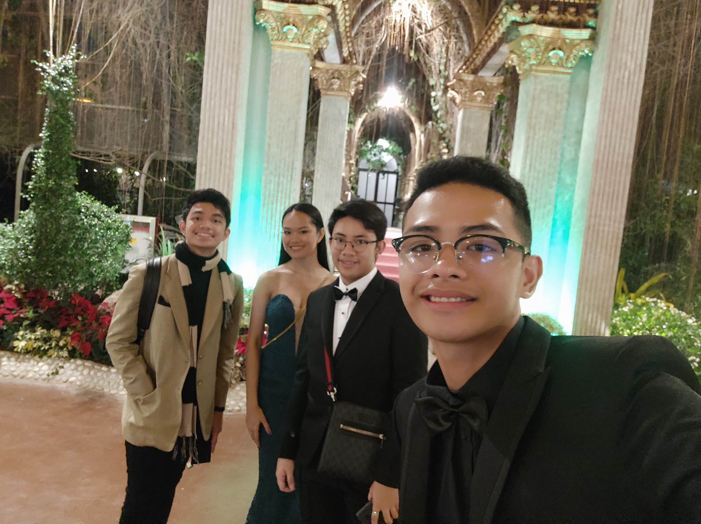
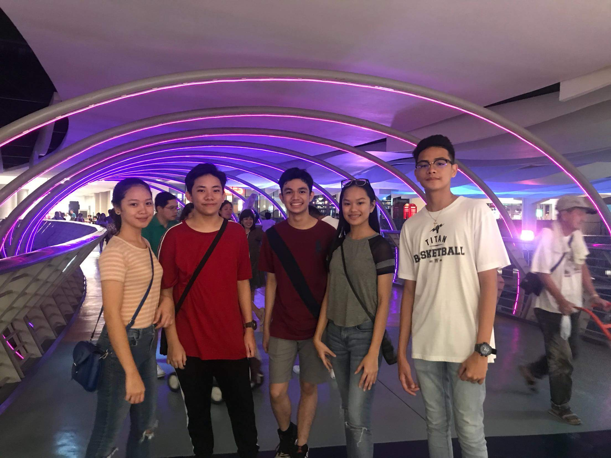
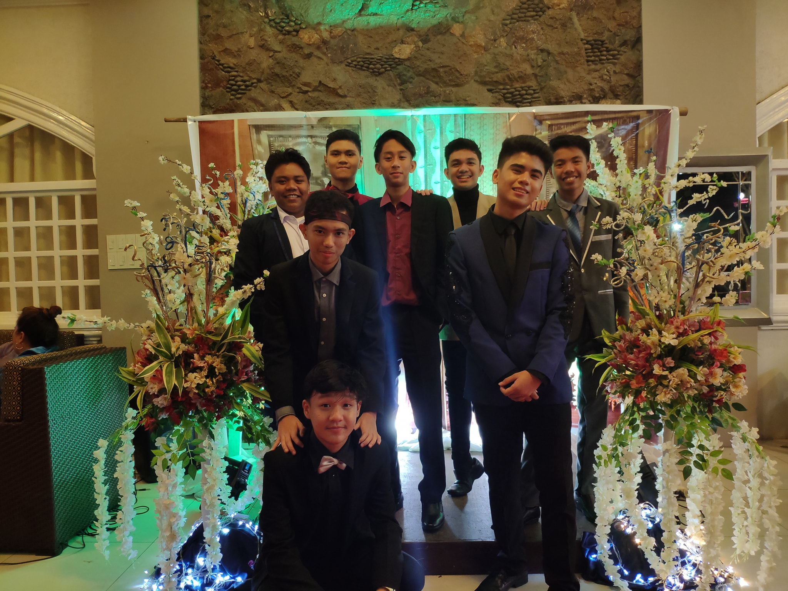
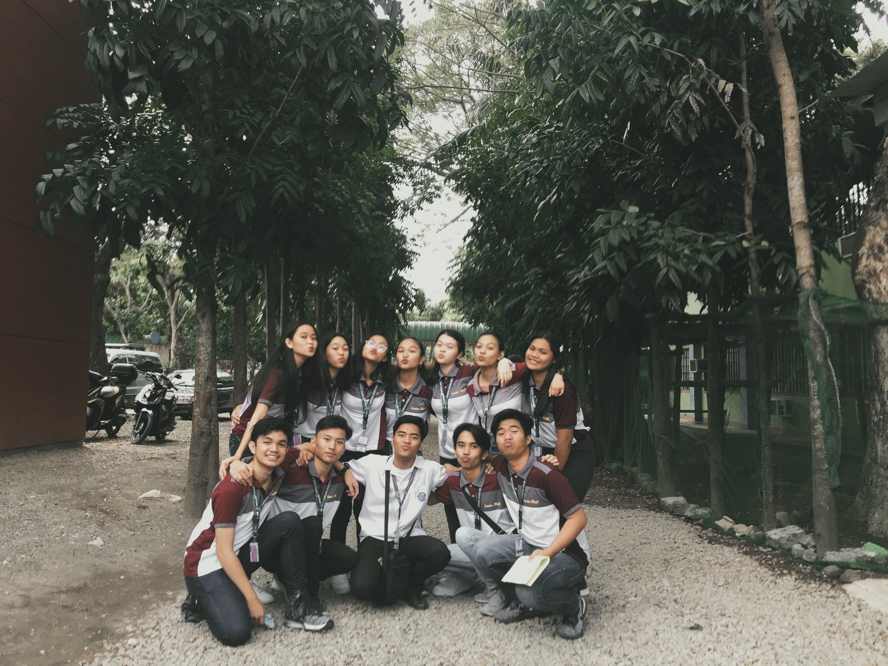
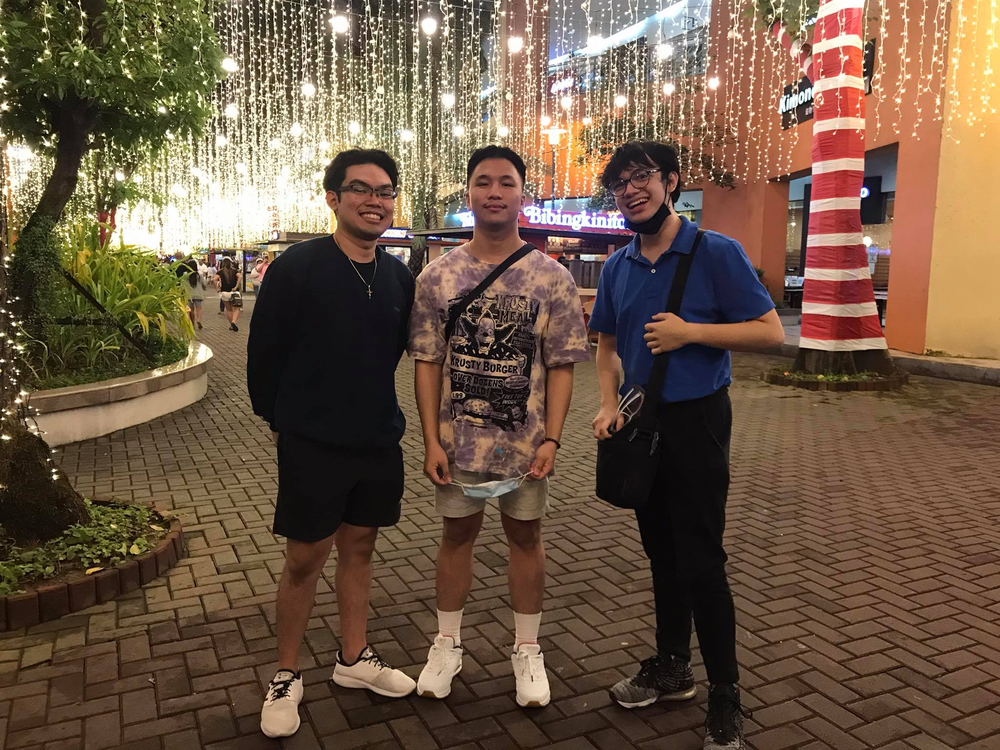
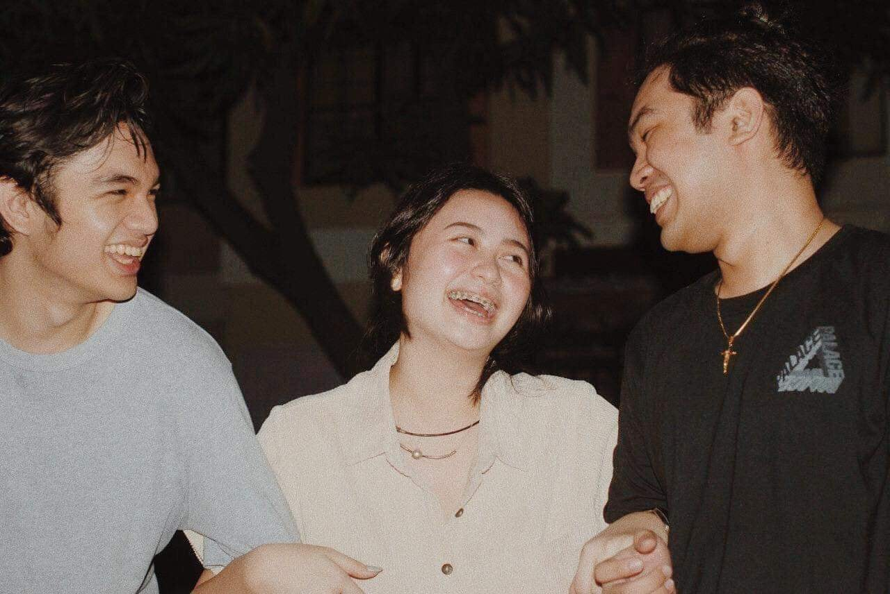

Who am I?
- I am born in San Pablo City, Laguna, where the hometown of my mother is located
- My father was born in Bicol region, it is where my brother was born.
- I am the second son (bunso) in our family, I have an older brother which is older by 8 years.
- I am usually told that I am kinda weird, but also quite sociable.
- I am usually with my family as we like to get together most of the time.
- However, in school days I tend to stay outside with my friends as long as possible
Family Relationships

This is my brother and my mother. I was born on Laguna which is the hometown of my mother
I and stayed there for 17 years until I decided to move at my brother and his partner’s place
in Cavite. Me and my brother are close as we have common interest and my mother and I get along well.

This is my brother’s partner and I get along with her very well.
She is the first my brother introduced
They also have a very cute child which I am very fond of.


This is my father and although we don’t see each other much we get along very well. We see each other at times and important occasions only
as he is quite hard working and passionate with his work. I admire him as he is a strong person.


These are my cousins which was can also be considered as my friends/siblings as we get along with each other very well and if there is a chance,
we see each other. They were the people whom I wish the pandemic finally ends so I can meet them and hang out more often as we all are studying in
Manila. We all have the same hobby which is to play online games where we can spend more than 8 hours a day playing together even if there is a class on
the day after. We also love to explore the place we are in when together. I hope we can spend more time together as the pandemic made us not see each other
for more than a year.
Relationship-Friends

These are my first circle of friends. They are my classmates whom I met in San Pablo Christian School. They supported me when I was at lowest point of my
life and helped me reach whatever I have achieved right now. They gave me confidence and strength so that I would persevere on whatever I am pursuing in life.
Without them I, John Paolo Rosales would not reach whatever I have achieved right now. They made my life colorful and more fun to live. I am very grateful
that I met these people as even until now we have a great bond and will continue to be, now and forever.

These people are the friends I met during senior highschool. They taught me many sides of life and despite the pandemic that made our real-life interaction
not much long compared to the usual, we made memories despite the restrictions with the use of internet and world wide web. They are the people which made me
widened my horizons in life as all of them are different in their own ways.


These are the friends I personally met when I started attending St. Paul University Manila. The person in black shirt is Earl Davic Ong (BSCS_2) he is a great friend,
brother, and a life coach to me despite the limited time we met we are having a great time.The man with violet shirt is John Kenneth Sy (BSBA_MM_2), a kind and approachable
person and we tend to play call of duty mobile a lot. Lastly, the beautiful woman in the picture is Mary Joy Zapatos (BSBA_MM_2) made me feel that she is trustworthy and a
great friend to have.